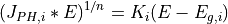

Introduction¶
Photo-electrochemistry characterizations are used to study films at macroscopic, mesoscopic, and microscopic scales. The latter advances were used to support (photo-)electrochemical studies of the electronic and optical properties of passive films and oxidized metals, and of their interfaces with electrolytes, providing informations on the nature and structure of these materials and to use properties such as the oxidation behaviour of a metallic substrate.
Basically, two kinds of curves are recorded in the course of photoelectrochemical characterization experiments,
photocurrent voltammograms and photocurrent energy spectra. In photocurrent voltammograms, photocurrents are measured
as a function of the potential,  , applied to the semiconducting electrode, at a given photon energy,
, applied to the semiconducting electrode, at a given photon energy,  .
In photocurrent energy spectra, photocurrents are recorded, at a given applied potential, V, as a function of the photon energy,
.
In photocurrent energy spectra, photocurrents are recorded, at a given applied potential, V, as a function of the photon energy,  .
The analysis of the shapes of photocurrent voltammograms may allow to obtain informations such as the semiconducting type of the material,
the energy of the surface band levels, the presence of macroscopic defects inducing photogenerated electron–hole pairs recombinations.
.
The analysis of the shapes of photocurrent voltammograms may allow to obtain informations such as the semiconducting type of the material,
the energy of the surface band levels, the presence of macroscopic defects inducing photogenerated electron–hole pairs recombinations.
However, despite attempts to refine the Gartner-Butler model by taking into account surface or volume recombination,
a complete description of the photocurrent voltammograms remains difficult, for the latter developments make use of a
high number of adjustable parameters, most of them being very difficult to assess. The analysis of the photocurrent
energy spectra is intended to identify the chemical nature of the material constituting the semiconducting electrode,
through the value of their bandgap energies,  as, on the one hand, bandgap energy values have been reported
in the literature for numerous compounds, and as, on the other hand, bandgap values may be estimated from thermodynamic extensive atomic data.
Practically, photocurrent energy spectra are usually analyzed by means of linear transforms to take benefit of the fact that,
using the simplified form of the Gartner–Butler model, the quantum yield,
as, on the one hand, bandgap energy values have been reported
in the literature for numerous compounds, and as, on the other hand, bandgap values may be estimated from thermodynamic extensive atomic data.
Practically, photocurrent energy spectra are usually analyzed by means of linear transforms to take benefit of the fact that,
using the simplified form of the Gartner–Butler model, the quantum yield,  , of the photocurrent is proportional
to the light absorption coefficient.
, of the photocurrent is proportional
to the light absorption coefficient.
In such conditions, , obeys to the following relationship:

where  is a constant (things other than being equal),
is the bandgap energy of the semiconductor, and
is a constant (things other than being equal),
is the bandgap energy of the semiconductor, and  depends
on the band to band transition type,
depends
on the band to band transition type,  for an allowed direct transition,
and
for an allowed direct transition,
and  for an allowed indirect transition. Direct transitions are rarely
observed in more or less disordered thin oxide films.
for an allowed indirect transition. Direct transitions are rarely
observed in more or less disordered thin oxide films.
Fitting of the Photocurrent Energy Spectra¶
Linear transformations were successfully performed for oxides made of one or two constituents. However, for complex oxide scales formed of several p-type and n-type phases, the complete description of the photocurrent energy spectra could not be achieved, and only semi-quantitative and/or partial informations could be obtained on the oxides present in the scales.
As  is measured under modulated light conditions and thus actually is a complex number,
the real and the imaginary parts of the photocurrent should be considered simultaneously when analyzing
and fitting the photocurrent energy spectra, rather than their modulus 1.
is measured under modulated light conditions and thus actually is a complex number,
the real and the imaginary parts of the photocurrent should be considered simultaneously when analyzing
and fitting the photocurrent energy spectra, rather than their modulus 1.
(1)¶
where  and
and  represent the modulus and phase shift, respectively,
of the photocurrent issued from the ith semiconducting constituent of the oxide layer.
For thin semiconducting films, the space charge regions are low compared to penetration depth of the light.
may thus be expected, at a given applied potential, to follow the simplified form of the Gartner–Butler model.
represent the modulus and phase shift, respectively,
of the photocurrent issued from the ith semiconducting constituent of the oxide layer.
For thin semiconducting films, the space charge regions are low compared to penetration depth of the light.
may thus be expected, at a given applied potential, to follow the simplified form of the Gartner–Butler model.

where  and
and  represent the energy gap and a value proportional
to ( * is proportional to but not equal to ) for the ith semiconducting constituent.
represent the energy gap and a value proportional
to ( * is proportional to but not equal to ) for the ith semiconducting constituent.
For a given vector of  (
( , , ) triplets,
representing the supposed number of semiconducting phases contributing to the photocurrent,
the scalar function to be minimized by the Nelder-Mead function was defined as the product of the square roots of two quantities:
, , ) triplets,
representing the supposed number of semiconducting phases contributing to the photocurrent,
the scalar function to be minimized by the Nelder-Mead function was defined as the product of the square roots of two quantities:

The 3 variables can be locked or not by the user. Initial estimates can be provided by
the user or can be randomly generated. Several successive calls of the Nelder-Mead procedure are
necessary to reach the minimum of the scalar function and a stable set of the output parameters.
The user is free to set the number of successive calls of the Nelder-Mead procedure.
Constraints on the 3 variables can be set by the user.
- 1
J.-P. Petit, R. Boichot, A. Loucif, A. Srisrual, and Y. Wouters, Photoelectrochemistry of Oxidation Layers: a Novel Approach to Analyze Photocurrent Energy Spectra, Oxidation of Metals, vol. 1 , pp. 1--11, 2013.